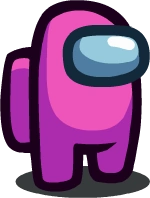
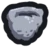

Colors
Colors change the appearance of the characters in Among Us. Only one character can have each color in the same lobby.
Overview
Players are able to select between 18 different colors using the wardrobe: Red, Blue, Green, Pink, Orange, Yellow, Black, White, Purple, Brown, Cyan, Lime, Maroon, Rose, Banana, Gray, Tan and Coral. The player's selected color does not directly affect gameplay, and only directly affects the player's in-game appearance. The only exception was Fortegreen, who is not legitimately playable in-game and causes numerous bugs when played as. Each color also has a unique color ID; for example, Red's is 0, and Gray's is 15. Fortegreen was an exception to this rule, as it occupied all IDs of whole numbers above 11, examples being 12 and 100, though as of version 2021.2.21, Fortegreen's color ID was removed from the code, so it can no longer be accessed by ID. However, it can still be accessed when joining a lobby (appearing as Fortegreen briefly), selecting a color as someone with that color joins, or as a side effect of another bug.
List of Colors
| Image | Name | Color ID |
|---|---|---|
| Red | 0 | |
| Blue | 1 | |
| Green | 2 | |
|  | Pink | 3 |
| Orange | 4 | |
| Yellow | 5 | |
 |
Black | 6 |
 |
White | 7 |
 |
Purple | 8 |
| Brown | 9 | |
| Cyan | 10 | |
| Lime | 11 | |
| Maroon | 12 | |
 |
Rose | 13 |
 |
Banana | 14 |
| Gray | 15 | |
 |
Tan | 16 |
 |
Coral | 17 |
Unavailable or unused colors
| Image | Name | Color ID |
|---|---|---|
 |
Fortegreen | 18 or more (account settings only) |
 |
Olive | - |
Trivia
- There are eight colors that were added after Among Us's initial release.
- Six new colors were confirmed for a future Among Us update in the Innersloth Discord server. This update was implemented to the game on June 15, 2021.
- On Discord, a tiebreaker vote between Coral and Olive started on April 20, 2021, and ended roughly 28 hours later. After the vote ended, Coral was deemed the winner.
- On May 20, 2021, Innersloth confirmed another new color, Rose, on the Discord server and Twitter. They also announced more information to be announced during the Summer Game Fest on June 10.
- On May 26, 2021, Gray was confirmed to be added by Innersloth on the Discord server and Twitter.
- On June 3, 2021, Tan's readdition was confirmed by Innersloth on Twitter and Discord, with a trailer.
- On June 8, 2021, a couple days later, Maroon was confirmed as an upcoming color by Innersloth on their official Discord server and Twitter account.
- On June 10, 2021, during the Summer Game Fest, a color called Banana was confirmed.
- Fortegreen and Olive are the only colors that cannot be selected in the wardrobe.
- However, these color IDs result from Fortegreen being Among Us's failsafe color.
- Tan is the only color that was temporarily removed from Among Us. During the removal period, it was still officially recognized in the Innersloth Discord server as a custom emoji, and it has since been added back.
- Similarly, Cyan was used in a prototype for Among Us, but removed from its original release. It was later added back along with Lime.
- If the player's selected color ID is anything but a whole number, it will be set to a random value between 0 and 17.
- Some cosmetics change their appearance based on the player's selected color. These cosmetics include the Mini Crewmate hat, Mini Crewmate pet, and We All Float Here.
- Two more cosmetics, the Imp-ressive and Batty, have this ability as well, but only if their "Crewcolor" variants are selected. They do not have this ability by default.
- If the player is playing as Fortegreen, then these cosmetics will take the appearance of Red's.
- Contrary to popular belief, the player's color does not affect the chances of them being The Impostor.
Gallery
Cosmetics
Cosmetics are items in Among Us used to customize characters. There are five types of cosmetics: hats, skins, nameplates, visor cosmetics, and pets. Hats are worn on players' heads, skins are worn on their bodies, nameplates appear on the player's voting box in meetings, visors are worn on the face, and pets follow the player around until the player is killed by An Impostor or ejected.
Some cosmetics are free and automatically owned by the player, while a variety of other cosmetics can be unlocked by paying in-game currency. Cosmetics can be bought in the shop or inside Cosmicubes, and owned cosmetics can be equipped in the wardrobe.
Cosmetics grant little gameplay advantage and mostly serve the purpose of supporting the developers. However, if someone is An Impostor and is running away or using a vent, people can identify them by a hat or pet because they make the space of their character larger. On the other hand, if someone is a Crewmate, then cosmetics could be used to verify that a player was in a location. Some cosmetics slightly hide the color of the player, which can further confuse other players. Players with different cosmetics also assist colorblind players in telling characters apart.
Hats
Hats accessorize or cover the top of a character's body.
| Name | Image |
|---|---|
| Abominal Head | |
| Bein Cheese | |
| Cap-Tain | |
| Chocolate Scoop | |
| Mini-Crewmate |
Skins
Skins cover the lower half of a character's body, with the exception of the Right Hand Man Reborn skin (which covers the left half instead).
| Name | Image |
|---|---|
| Abominal Snowmate | |
| Airship Mechanic | |
| Astronaught | |
| Business Skirt | |
| Caitlyn's Uniform |
Pets
Pets follow their owner around until they die or if the game ends.
| Name | Image |
|---|---|
| Heimerdinger's Poro |  |
| Hampton |  |
| UFO | |
| Glitch Pet |  |
| Mini-Crewmate |  |
Visor Cosmetics
Visor cosmetics accessorize a character's visor. Many of them were previously hats.
| Name | Image |
|---|---|
| My Name Geoff | |
| Note 2 Self | |
| Safe Not Sorry | |
| Got My Eye On You | |
| A Beard |  |
Nameplates
Nameplates add a stylized background to the player's voting box.
| Name | Image |
|---|---|
| Trees | |
| The Vault Above | |
| The Greatest Nameplate | |
| Snowmates of Polus | |
| Emeralds! |
Trivia
- There used to be sprites for unused hats in the game files, including a traffic cone, a drinking cap, a headcrab, and a pot. These hats were either removed or repurposed into officially released hats.
- Many skins and hats reference Marcus Bromander's Henry Stickmin series.
- As of version 2020.10.22, cosmetics are visible on the voting screen, and as of version 2021.6.30, they are also visible in the chat screen.
- The Halloween hats can be unlocked before or after Halloween by setting the device's time to October.
- The same applies to the Christmas hats.
- Any player playing as Fortegreen is unable to select cosmetics, and will appear wearing the military suit.
- When the kill animation is displayed, a few hats have changes, such as the We All Float Here popping.
- The cosmetics worn on the players are mirrored if the player is facing the opposite direction. There are some exceptions to this, such as the Right Hand Man: Reborn.